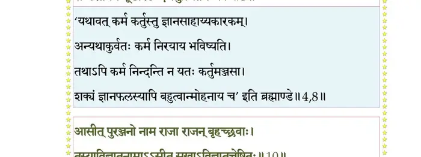
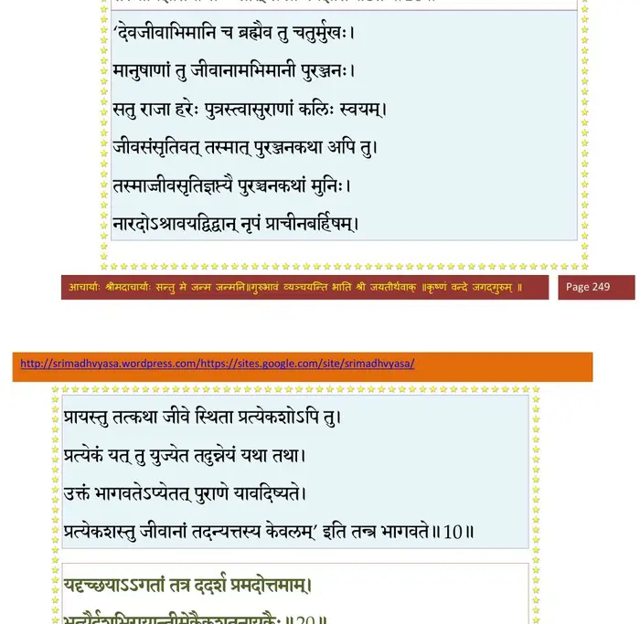
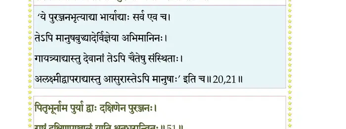
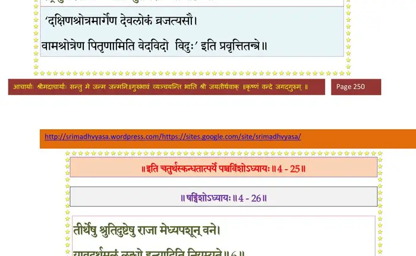

स्कन्ध 4 · अध्याय 25
श्लोक १
मैत्रेय उवाच –
इति सन्दिश्य भगवान् बार्हिषदैरभिपूजितः ।
पश्यतां राजपुत्राणां तत्रैवान्तर्दधे हरः।। १ ।।
इति सन्दिश्य भगवान् बार्हिषदैरभिपूजितः ।
पश्यतां राजपुत्राणां तत्रैवान्तर्दधे हरः।। १ ।।
श्लोक २
रुद्रगीतं भगवतः स्तोत्रं सर्वे प्रचेतसः ।
जपन्तस्ते तपस्तेपुर्वर्षाणामयुतं जले।। २ ।।
जपन्तस्ते तपस्तेपुर्वर्षाणामयुतं जले।। २ ।।
श्लोक ३
प्राचीनबर्हिषं क्षत्तः कर्मस्वासक्तमानसम् ।
नारदोऽध्यात्मतत्वज्ञः कृपालुः प्रत्यबोधयत्।। ३ ।।
नारदोऽध्यात्मतत्वज्ञः कृपालुः प्रत्यबोधयत्।। ३ ।।
श्लोक ४
नारद उवाच –
श्रेयस्त्वं कृतमद् राजन् कर्मणाऽऽत्मन ईहसे ।
दुःखहानिः सुखावाप्तिः श्रेयस्तन्नेहयेष्यते।। ४ ।।
श्रेयस्त्वं कृतमद् राजन् कर्मणाऽऽत्मन ईहसे ।
दुःखहानिः सुखावाप्तिः श्रेयस्तन्नेहयेष्यते।। ४ ।।
भागवततात्पर्यनिर्णय
श्लोक ५
प्राचीनबर्हिरुवाच–
न जानामि महाभाग परं कर्मापविद्धधीः ।
ब्रूहि मे विमलं ज्ञानं येन मुच्येय कर्मभिः।। ५ ।।
न जानामि महाभाग परं कर्मापविद्धधीः ।
ब्रूहि मे विमलं ज्ञानं येन मुच्येय कर्मभिः।। ५ ।।
श्लोक ६
नारद उवाच –
गृहेषु कूटधर्मेषु पुत्रदारधनार्थधीः ।
न परं विन्दते मूढो भ्राम्यन् संसारवर्त्मसु।। ६ ।।
गृहेषु कूटधर्मेषु पुत्रदारधनार्थधीः ।
न परं विन्दते मूढो भ्राम्यन् संसारवर्त्मसु।। ६ ।।
श्लोक ७
भो भो प्रजापते राजन् पशून् पश्य त्वयाऽध्वरे ।
संज्ञापितान् जीवसङ्घान् निर्घृणेन सहस्रशः।। ७ ।।
संज्ञापितान् जीवसङ्घान् निर्घृणेन सहस्रशः।। ७ ।।
श्लोक ८
एते त्वां सम्प्रतीक्षन्ते स्मरन्तो वैशसं तव ।
सम्परेतमयःकूटैश्छिन्दन्त्युत्थितमन्यवः।। ८ ।।
सम्परेतमयःकूटैश्छिन्दन्त्युत्थितमन्यवः।। ८ ।।
भागवततात्पर्यनिर्णय

श्लोक ९
अत्र ते कथयिष्येऽहमितिहासं पुरातनम् ।
पुरञ्जनस्य चरितं निबोध गदतो मम।। ९ ।।
पुरञ्जनस्य चरितं निबोध गदतो मम।। ९ ।।
श्लोक १०
आसीत् पुरञ्जनो नाम राजा राजन् बृहच्छ्रवाः ।
तस्याविज्ञातनामाऽऽसीत् सखाऽविज्ञातचेष्टितः।। १० ।।
तस्याविज्ञातनामाऽऽसीत् सखाऽविज्ञातचेष्टितः।। १० ।।
भागवततात्पर्यनिर्णय

श्लोक ११
सोऽन्वेषमाणः शरणं बभ्राम पृथिवीं प्रभुः ।
नानुरूपं यदाऽविन्ददभूत् स विमना इव।। ११ ।।
नानुरूपं यदाऽविन्ददभूत् स विमना इव।। ११ ।।
श्लोक १२
न साधु मेने ताः सर्वा भूतले यावतीः पुरः ।
कामान् कामयमानोऽसौ तस्य तस्याभिपत्तये।। १२ ।।
कामान् कामयमानोऽसौ तस्य तस्याभिपत्तये।। १२ ।।
श्लोक १३
स एकदा हिमवतो दक्षिणेष्वथ सानुषु ।
ददर्श नवभिर्द्वारैः पुरीं लक्षितलक्षणाम्।। १३ ।।
ददर्श नवभिर्द्वारैः पुरीं लक्षितलक्षणाम्।। १३ ।।
श्लोक १४
प्राकारोपवनाट्टालपरिखैरुच्चतोरणैः ।
स्वर्णरौप्यायसैः ृङ्गैः संकुला सर्वतो गृहैः।। १४ ।।
स्वर्णरौप्यायसैः ृङ्गैः संकुला सर्वतो गृहैः।। १४ ।।
श्लोक १५
नीलस्फटिकवैदूर्यमुक्तामरकतारुणैः ।
क्लृप्तहर्म्यस्थलीं दीप्तां श्रिया भोगवतीमिव।। १५ ।।
क्लृप्तहर्म्यस्थलीं दीप्तां श्रिया भोगवतीमिव।। १५ ।।
श्लोक १६
सभाचत्वररथ्याभिराक्रीडायतनापणैः ।
चैत्यध्वजपताकाभिर्युक्तां विद्रुमवेदिभिः।। १६ ।।
चैत्यध्वजपताकाभिर्युक्तां विद्रुमवेदिभिः।। १६ ।।
श्लोक १७
पुर्यास्तु बाह्योपवने दिव्यद्रुमलताकुले ।
नदद्विहङ्गालिकुलकोलाहलजलाशये।। १७ ।।
नदद्विहङ्गालिकुलकोलाहलजलाशये।। १७ ।।
श्लोक १८
हिमनिर्खरविप्रुष्मत्कुसुमाकरवायुना ।
चलत्प्रवालविटपिनलिनीतटसंपदि।। १८ ।।
चलत्प्रवालविटपिनलिनीतटसंपदि।। १८ ।।
श्लोक १९
नानाऽरण्यमृगव्रातैरनाबाधे मुनिव्रतैः ।
आहूतं मन्यते पान्थो यत्र कोकिलकूजितैः।। १९ ।।
आहूतं मन्यते पान्थो यत्र कोकिलकूजितैः।। १९ ।।
श्लोक २०
यदृच्छयाऽऽगतां तत्र ददर्श प्रमदोत्तमाम् ।
भृत्यैर्दशभिरायान्तीमेकैकशतनायकैः।। २० ।।
भृत्यैर्दशभिरायान्तीमेकैकशतनायकैः।। २० ।।
भागवततात्पर्यनिर्णय
श्लोक २१
तेषां परिवृढो राजन् सर्वेषां बलिमुद्वहन् ।
सस्त्रीकाणां सखा तस्या बहुरूपोऽग्रणीः स्त्रियः।। २१ ।।
सस्त्रीकाणां सखा तस्या बहुरूपोऽग्रणीः स्त्रियः।। २१ ।।
भागवततात्पर्यनिर्णय

श्लोक २२
पञ्चशीर्षाहिना गुप्तां प्रतीहारेण सर्वतः ।
अन्वेषमाणामृषभमप्रौढां कामरूपिणीम्।। २२ ।।
अन्वेषमाणामृषभमप्रौढां कामरूपिणीम्।। २२ ।।
श्लोक २३
सुनासां सुदतीं बालां सुकपोलां वराननाम् ।
समविन्यस्तकर्णाभ्यां बिभ्रतीं कुण्डलश्रियम्।। २३ ।।
समविन्यस्तकर्णाभ्यां बिभ्रतीं कुण्डलश्रियम्।। २३ ।।
श्लोक २४
पिशङ्गनीवीं सुश्रोणीं श्यामां कनकमेखलाम् ।
पद्भ्यां क्वणद्भ्यां चलतीं नूपुरैर्देवतामिव।। २४ ।।
पद्भ्यां क्वणद्भ्यां चलतीं नूपुरैर्देवतामिव।। २४ ।।
श्लोक २५
स्तनौ व्यञ्जितकैशोरौ समवृत्तौ निरन्तरौ ।
वस्त्रान्तेन निगूहन्तीं व्रीडया गजगामिनीम्।। २५ ।।
वस्त्रान्तेन निगूहन्तीं व्रीडया गजगामिनीम्।। २५ ।।
श्लोक २६
तामाह ललितां वीरः सव्रीडस्मितशोभिनीम् ।
स्निग्धेनापाङ्गपुङ्खेन स्पृष्टः प्रेमभ्रमद्भ्रुवा।। २६ ।।
स्निग्धेनापाङ्गपुङ्खेन स्पृष्टः प्रेमभ्रमद्भ्रुवा।। २६ ।।
श्लोक २७
का त्वं कञ्जपलाशाक्षि कस्यासीह कुतः सति ।
इमामुपपुरीं भीरु किं चिकीर्षसि शंस मे।। २७ ।।
इमामुपपुरीं भीरु किं चिकीर्षसि शंस मे।। २७ ।।
श्लोक २८
क एतेऽनुपथा एत एकादशमहाभटाः ।
एता वा ललना सुभ्रु कोऽयं तेऽहिः पुरस्सरः।। २८ ।।
एता वा ललना सुभ्रु कोऽयं तेऽहिः पुरस्सरः।। २८ ।।
श्लोक ३०
त्वं ह्रीर्भवान्यस्यथ वाग् रमा पतिं विचिन्वती किं मुनिवद् रहो वने ।
त्वदङ्घ्रिसाम्याप्तसमस्तकामः क्व पद्मकोशः पतितः कराग्रात्।। २९
नासां वरोर्वन्यतमा भुविस्पृक् पुरीमिमां वीरवरेण साकम् ।
अर्हस्यलङ्कर्तुमदभ्रकर्मणा लोकं परं श्रीरिव यज्ञपुंसा।। ३० ।।
त्वदङ्घ्रिसाम्याप्तसमस्तकामः क्व पद्मकोशः पतितः कराग्रात्।। २९
नासां वरोर्वन्यतमा भुविस्पृक् पुरीमिमां वीरवरेण साकम् ।
अर्हस्यलङ्कर्तुमदभ्रकर्मणा लोकं परं श्रीरिव यज्ञपुंसा।। ३० ।।
श्लोक ३१
यदेष माऽपाङ्गविखण्डितेन्द्रियं सव्रीडहासेक्षणविभ्रमद्भ्रुवः ।
तवोपसृष्टो भगवान् मनोभवः प्रबाधतेऽथानुगृहाण शोभने।। ३१ ।।
तवोपसृष्टो भगवान् मनोभवः प्रबाधतेऽथानुगृहाण शोभने।। ३१ ।।
श्लोक ३३
त्वदाननं सुभ्रु सुतारलोचनं व्यालम्बिनीलालकवृन्दसंवृतम् ।
उन्नीय मे दर्शय वल्गुवाचकं यद् व्रीडया नाभिमुखं शुचिस्मिते।।३२
इत्थं पुरञ्जनं नारी याचमानमधीरवत् ।
अभ्यभाषत तं वीरं हसन्ती वीरमोहिनी।। ३३ ।।
उन्नीय मे दर्शय वल्गुवाचकं यद् व्रीडया नाभिमुखं शुचिस्मिते।।३२
इत्थं पुरञ्जनं नारी याचमानमधीरवत् ।
अभ्यभाषत तं वीरं हसन्ती वीरमोहिनी।। ३३ ।।
श्लोक ३४
न विदाम वयं सम्यक् कर्तारं पुरुषर्षभ ।
आत्मनश्च परस्यापि गोत्रं नाम च यत् कृतम्।। ३४ ।।
आत्मनश्च परस्यापि गोत्रं नाम च यत् कृतम्।। ३४ ।।
श्लोक ३५
इहाद्य सन्तमात्मानं विदाम न ततः परम् ।
येनेयं निर्मिता वीर पुरी शरणमात्मनः।। ३५ ।।
येनेयं निर्मिता वीर पुरी शरणमात्मनः।। ३५ ।।
श्लोक ३६
एते सखायः सख्यो मे नरा नार्यश्च मानद ।
सुप्तायां मयि जागर्ति नागोऽयं पालयन् पुरीम्।। ३६ ।।
सुप्तायां मयि जागर्ति नागोऽयं पालयन् पुरीम्।। ३६ ।।
श्लोक ३७
दिष्ट्याऽऽगतोऽसि भद्रं ते ग्राम्यान् भोगानभीप्ससे ।
उद्वहिष्यामि त्वां स्नेहं स्वबन्धुभिररिन्दम।। ३७ ।।
उद्वहिष्यामि त्वां स्नेहं स्वबन्धुभिररिन्दम।। ३७ ।।
श्लोक ३८
इमां त्वमधितिष्ठस्व पुरीं नवमुखीं विभो ।
मयोपनीतान् गृह्णानः कामभोगाञ्च्छतं समाः।। ३८ ।।
मयोपनीतान् गृह्णानः कामभोगाञ्च्छतं समाः।। ३८ ।।
श्लोक ३९
का नु त्वदन्यं रमयेदरतिज्ञमकोविदम् ।
असाम्परायाभिमुखमश्वस्तनविदं पशुम्।। ३९ ।।
असाम्परायाभिमुखमश्वस्तनविदं पशुम्।। ३९ ।।
श्लोक ४०
धर्मो ह्यत्रार्थकामौ च प्रजानन्दोऽमृतं यशः ।
लोका विशोका विरजा यान् न केवलिनो विदुः।। ४० ।।
लोका विशोका विरजा यान् न केवलिनो विदुः।। ४० ।।
श्लोक ४१
पितृदेवर्षिमर्त्यानां भूतानामात्मनश्च ह ।
क्षेम्यं वदन्ति शरणं भवेऽस्मिन् यद् गृहाश्रमम्।। ४१ ।।
क्षेम्यं वदन्ति शरणं भवेऽस्मिन् यद् गृहाश्रमम्।। ४१ ।।
श्लोक ४२
का नाम वीर विख्यात वदान्यं प्रियदर्शनम् ।
न वृणीत पतिं प्राप्तं मादृशी त्वादृशं स्वयम्।। ४२ ।।
न वृणीत पतिं प्राप्तं मादृशी त्वादृशं स्वयम्।। ४२ ।।
श्लोक ४३
कस्या मनस्ते भुजगेन्द्रभोगयोः स्त्रियो न सज्जेद् भुजयोर्महाभुज ।
योऽनाथवर्गाधिमलं घृणोद्धतस्मितावलोकेन चरस्यपोहितुम्।। ४३ ।।
योऽनाथवर्गाधिमलं घृणोद्धतस्मितावलोकेन चरस्यपोहितुम्।। ४३ ।।
श्लोक ४४
नारद उवाच–
इति तौ दम्पती तत्र समुह्य समयं मिथः ।
तां प्रविश्य पुरीं राजन् मुमुदाते शतं समाः।। ४४ ।।
इति तौ दम्पती तत्र समुह्य समयं मिथः ।
तां प्रविश्य पुरीं राजन् मुमुदाते शतं समाः।। ४४ ।।
श्लोक ४५
उपगीयमानो ललितं तत्र तत्र च गायकैः ।
क्रीडन् परिवृतः स्त्रीभिर्ह्रदिनीमाविशच्छुचौ।। ४५ ।।
क्रीडन् परिवृतः स्त्रीभिर्ह्रदिनीमाविशच्छुचौ।। ४५ ।।
श्लोक ४६
सप्तोपरि कृता द्वारः पुरस्तस्यास्तु द्वे अधः ।
पृथग् विषयगत्यर्थं तस्यां यः कश्चनेश्वरः।। ४६ ।।
पृथग् विषयगत्यर्थं तस्यां यः कश्चनेश्वरः।। ४६ ।।
श्लोक ४७
पञ्चद्वारस्तु पौरस्त्या दक्षिणैका तथोत्तरा ।
पश्चिमे द्वे अमूषां ते नामानि नृप वर्णये।। ४७ ।।
पश्चिमे द्वे अमूषां ते नामानि नृप वर्णये।। ४७ ।।
श्लोक ४८
खद्योताविर्मुखी च प्राग्द्वारावेकत्र निर्मिते ।
विभ्राजितं जनपदं याति ताभ्यां द्युमत्सखः।। ४८ ।।
विभ्राजितं जनपदं याति ताभ्यां द्युमत्सखः।। ४८ ।।
श्लोक ४९
नलिनी नालिनी च प्राग्द्वारावेकत्र निर्मिते ।
अवधूतसखस्ताभ्यां विषयं याति सौरभम्।। ४९ ।।
अवधूतसखस्ताभ्यां विषयं याति सौरभम्।। ४९ ।।
श्लोक ५०
मुख्या नाम पुरस्ताद् द्वास्तयाऽऽपणबहूदनौ ।
विषयौ याति पुरराट् रसज्ञविपणान्वितः।। ५० ।।
विषयौ याति पुरराट् रसज्ञविपणान्वितः।। ५० ।।
श्लोक ५१
पितृभूर्नृप पुर्या द्वा दक्षिणेन पुरञ्जनः ।
राष्ट्रं दक्षिणपाञ्चालं याति श्रुतधरान्वितः।। ५१ ।।
राष्ट्रं दक्षिणपाञ्चालं याति श्रुतधरान्वितः।। ५१ ।।
भागवततात्पर्यनिर्णय
श्लोक ५२
देवभूर्नाम पुर्या द्वा उत्तरेण पुरञ्जनः ।
राष्ट्रमुत्तरपाञ्चालं याति श्रुतधरान्वितः।। ५२ ।।
राष्ट्रमुत्तरपाञ्चालं याति श्रुतधरान्वितः।। ५२ ।।
भागवततात्पर्यनिर्णय

श्लोक ५३
आसुरी नाम पश्चाद् द्वास्तया याति पुरञ्जनः ।
ग्राम्यकं नाम विषयं दुर्मदेन समन्वितः।। ५३ ।।
ग्राम्यकं नाम विषयं दुर्मदेन समन्वितः।। ५३ ।।
श्लोक ५४
निर्ऋतिर्नाम पश्चाद्द्वास्तया याति पुरञ्जनः ।
वैशसं नाम विषयं लुब्धकेन समन्वितः।। ५४ ।।
वैशसं नाम विषयं लुब्धकेन समन्वितः।। ५४ ।।
श्लोक ५५
अन्धावमीषां पौराणां निर्वाक्योपस्करावुभौ ।
अक्षण्वतामधिपतिस्ताभ्यां याति करोति च।। ५५ ।।
अक्षण्वतामधिपतिस्ताभ्यां याति करोति च।। ५५ ।।
श्लोक ५६
स्वयं त्वन्तःपुरगतो विषूचिना समन्वितः ।
मोहं प्रसादं हर्षं वा याति जायात्मजोद्भवम्।। ५६ ।।
मोहं प्रसादं हर्षं वा याति जायात्मजोद्भवम्।। ५६ ।।
श्लोक ५७
एवं कर्मसु संसक्तः कामात्मा वञ्चितोऽबुधः ।
महिषी यद् यदीहेत तत् तदेवान्ववर्तत।। ५७ ।।
महिषी यद् यदीहेत तत् तदेवान्ववर्तत।। ५७ ।।
श्लोक ५८
क्वचित् पिबन्त्यां पिबति मदिरां मदविह्वलः ।
अश्नन्त्यां क्वचिदश्नाति जक्षत्यां सह जक्षति।। ५८ ।।
अश्नन्त्यां क्वचिदश्नाति जक्षत्यां सह जक्षति।। ५८ ।।
श्लोक ५९
क्वचिद् गायति गायन्त्यां रुदन्त्यां रुदति क्वचित् ।
क्वचिद्धसन्त्यां हसति जल्पन्त्यामनुजल्पति।। ५९ ।।
क्वचिद्धसन्त्यां हसति जल्पन्त्यामनुजल्पति।। ५९ ।।
श्लोक ६०
क्वचिद्धावति धावन्त्यां तिष्ठन्त्यामनुतिष्ठति ।
अनुशेते शयानायामन्वास्ते क्वचिदासतीम्।। ६० ।।
अनुशेते शयानायामन्वास्ते क्वचिदासतीम्।। ६० ।।
श्लोक ६१
क्वचिच्छृणोति शृण्वन्त्यां पश्यन्त्यामनुपश्यति ।
क्वचिज्जिघ्रति जिघ्रत्यां स्पृशन्त्यां स्पृशति क्वचित्।। ६१ ।।
क्वचिज्जिघ्रति जिघ्रत्यां स्पृशन्त्यां स्पृशति क्वचित्।। ६१ ।।
श्लोक ६२
क्वचिच्च शोचतीं जायामनुशोचति दीनवत् ।
अनुहृष्यति हृष्टायां मुदितामनुमोदते।। ६२ ।।
अनुहृष्यति हृष्टायां मुदितामनुमोदते।। ६२ ।।
श्लोक ६३
विप्रलब्धो महिष्यैवं सर्वप्रकृतिवञ्चितः ।
नेच्छन्ननुकरोत्यज्ञः क्लैब्यात् क्रीडामृगो यथा।। ६३ ।।
नेच्छन्ननुकरोत्यज्ञः क्लैब्यात् क्रीडामृगो यथा।। ६३ ।।
।। इति श्रीमद्भागवते चतुर्थस्कन्धे पञ्चविंशोऽध्यायः ।।